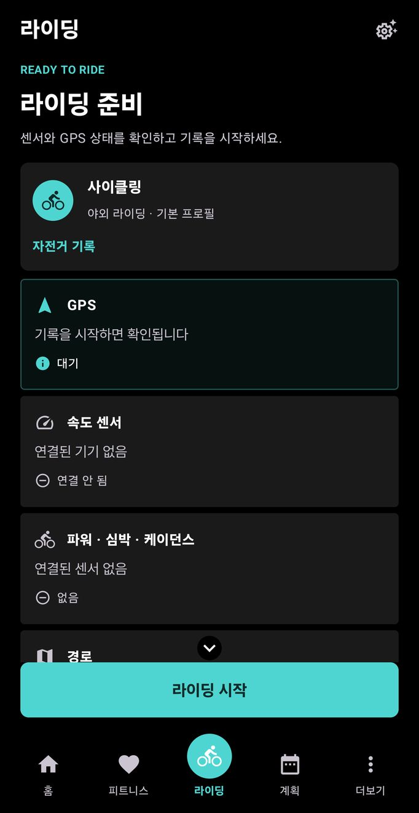
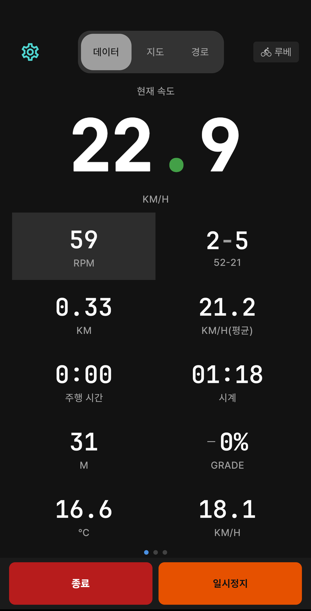
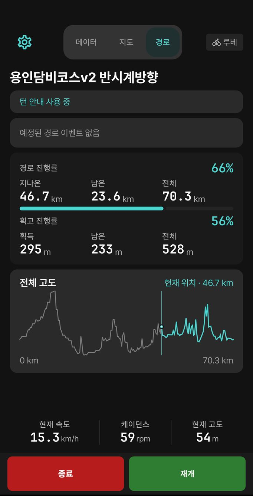
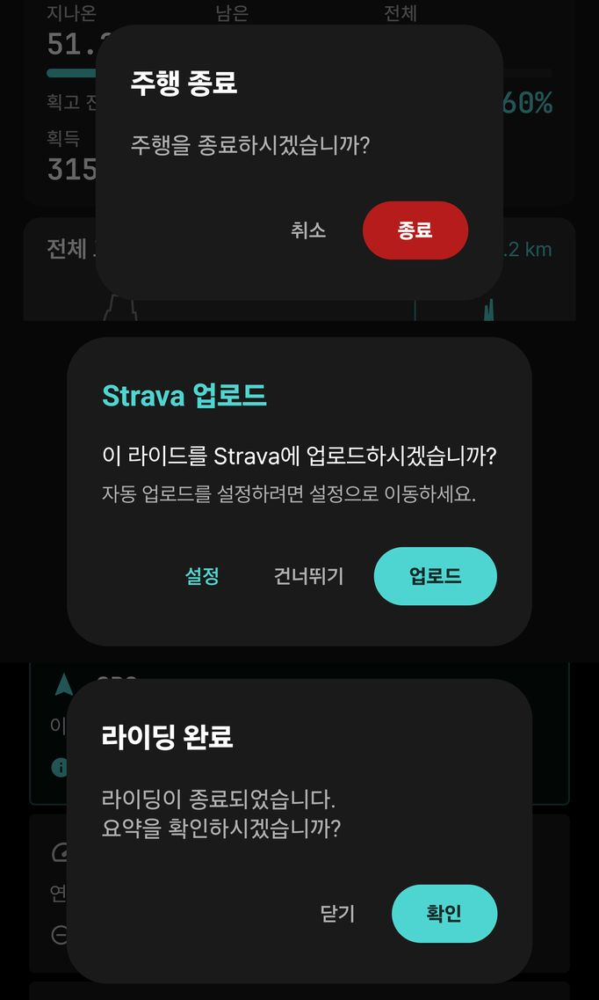
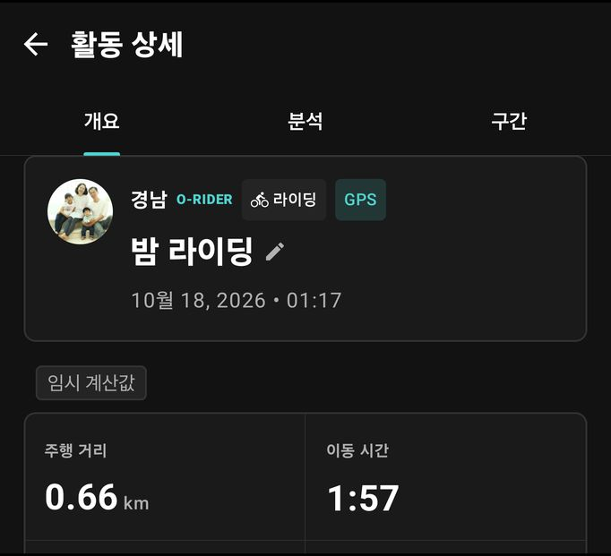

2. 첫 기록 남기기
이 장에서 할 수 있는 것
- 준비 화면에서 GPS·센서·경로 상태를 확인하고 기록을 시작합니다.
- 기록 중 일시정지·재개·랩을 쓰고, 끝나면 종료해 저장합니다.
- 자동 일시정지와 자동 시작이 언제 동작하는지 압니다.
따라 하기: 기록 시작
- 홈 오른쪽 위 종목 토글에서 자전거 또는 러닝을 고릅니다.
- 하단 가운데 라이딩(러닝이면 러닝) 탭을 누릅니다. 라이딩 준비 / 러닝 준비 화면이 열립니다.
- 준비 화면에서 GPS, 센서, 경로 줄을 확인합니다(아래 표). 러닝 준비 화면도 배치는 같고 센서 줄이 “심박 센서 (선택)”입니다.
- 맨 아래 라이딩 시작 또는 러닝 시작을 누르면 기록이 시작됩니다.

라이딩 준비 — 맨 위 “자전거 기록” 카드가 이번 기록의 종목입니다. GPS는 “기록을 시작하면 확인됩니다”로 표시되고 시작 후 정확도를 잡습니다.
| 준비 화면 줄 | 표시 예 | 뜻과 할 일 |
|---|
| GPS | 대기 / 준비됨 / 정확도 낮음 / 권한 없음 | “권한 없음”이면 위치 권한을 허용하세요. “정확도 낮음”이면 하늘이 트인 곳에서 잠시 기다립니다. |
| 센서 | 자전거: 속도 센서, 파워 · 심박 · 케이던스 / 러닝: 심박 센서 (선택) | “연결된 기기 없음”이어도 기록은 됩니다. 연결은 3장. |
| 경로 | 선택하지 않음 / 경로 이름 | 코스를 따라가려면 먼저 경로를 불러옵니다(6장). 줄이 가려 있으면 화면을 아래로 내리세요. |
로그인하지 않았으면 “로그인 안 됨 — 이 라이드는 클라우드에 백업되지 않습니다”, 등록한 센서가 아직 안 붙었으면 “등록 센서 N개가 아직 연결되지 않았습니다” 경고가 나옵니다. 경고가 있어도 시작은 할 수 있지만, 이유를 확인한 뒤 시작하세요.
화면 읽는 법: 기록 중 화면
기록이 시작되면 위쪽 탭 데이터 · 지도 · 경로로 페이지를 바꿉니다. 맨 아래에는 늘 종료와 일시정지 버튼이 있습니다.

데이터 페이지 (예시 화면 — 시뮬레이션이라 숫자는 의미 없음) — 가장 큰 숫자가 현재 속도입니다. 아래 칸은 데이터 필드 배치(4장)대로 나오고, 오른쪽 위 자전거 이름(예: 루베)이 지금 쓰는 자전거 프로필입니다.
| 페이지 | 보이는 것 | 나타나는 조건 |
|---|
| 데이터 | 속도·페이스, 거리, 시간, 심박 등 내가 배치한 데이터 필드. 숫자 아래 점은 데이터 페이지가 여러 장이라는 표시입니다. | 항상 |
| 지도 | 현재 위치, 지나온 길, 불러온 경로, 턴 안내 카드, 기온·바람 | 항상 (6장) |
| 경로 | 경로 이름, 턴 안내 상태, 경로 진행률(지나온·남은·전체 거리), 획고 진행률, 전체 고도 그래프와 현재 위치 | 경로를 불러왔을 때 |
| 오르막 | 남은 거리·남은 고도·경사도 (ClimbPro) | 오르막 정보가 있을 때 (6장) |
| 코칭 | 러닝 코칭 안내 | 러닝 기록 중 (8장) |
오르막 페이지에서는 위쪽에 오르막 등급(예: “중상급”)과 오르막 번호, 가운데에 경사 막대그래프, 그 아래에 남은 거리 · 남은 고도 · 경사도가 나옵니다.
따라 하기: 일시정지 · 재개 · 종료
- 잠시 멈추려면 아래 일시정지를 누릅니다. 버튼이 종료 · 재개로 바뀝니다.
- 다시 출발하려면 재개를 누릅니다. 수동 일시정지 중에 움직이면 “이동 중입니다 · 계속하기를 눌러 주세요” 안내와 함께 계속하기 버튼이 나옵니다.
- 끝내려면 종료를 누르고, “주행 종료 — 주행을 종료하시겠습니까?”에서 종료를 누릅니다. 계속 타려면 취소.
- Strava가 연결되어 있고 자동 업로드가 꺼져 있으면 “이 라이드를 Strava에 업로드하시겠습니까?”가 나옵니다. 업로드 / 건너뛰기 중에서 고르고, 다음부터 자동으로 올리려면 설정을 누릅니다(9장).
- “라이딩 완료 — 요약을 확인하시겠습니까?”에서 확인을 누르면 방금 기록의 활동 상세가 열립니다. 닫기를 눌러도 기록은 저장되어 있습니다.

일시정지 상태 (경로 페이지) (시뮬레이션 화면) — 아래 버튼이 종료 · 재개로 바뀝니다. 위쪽 “턴 안내 사용 중”은 네비 시작으로 턴 안내를 켠 상태라는 뜻입니다.

종료 뒤 차례로 뜨는 창 — 주행 종료 확인 → Strava 업로드 질문(자동 업로드가 꺼져 있을 때) → 요약 보기.

요약 = 활동 상세 (예시 화면 — 시뮬레이션이라 숫자는 의미 없음) — 막 끝낸 기록에는 임시 계산값 표시가 붙을 수 있습니다. 서버 계산이 아직 끝나지 않아 휴대폰이 계산한 값을 먼저 보여 준다는 뜻이고, 서버 계산이 끝나면 서버 값으로 바뀝니다.
구간을 나누려면 설정 > 주행 설정 > 자동 랩에서 거리·시간·출발선 기준을 고릅니다. 데이터 필드의 랩 · 랩 거리 · 랩 시간으로 구간 기록을 봅니다.
저장한 기록은 홈의
최근 활동과
설정 > 기록/경로/상태 > 주행 기록에서 볼 수 있습니다(
5장).
자동 일시정지 · 자동 시작 · 자동 랩
설정 위치: 설정 > 주행 설정
| 항목 | 하는 일 |
|---|
| 자동 일시정지 — 속도 임계값 · 대기 시간 | 속도가 임계값 아래로 대기 시간만큼 떨어지면 멈추고, 움직이면 다시 기록합니다. 화면에 “자동 일시정지 · 움직이면 자동으로 재개됩니다”가 나옵니다. |
| 자동 시작 | 휠 속도 센서가 연결되어 있을 때만 동작합니다. |
| 자동 랩 | 끄기 / 주행 거리 / 주행 시간 / 출발선. “출발선”은 출발 위치를 벗어났다가 다시 지나면 랩을 완료합니다. |
| 다음 라이드 리마인더 | 저장 가능한 라이드를 마치면 3일 뒤 오전 9시에 알려 줍니다. |
| 러닝 거리 음성 안내 | 러닝 중 1km마다 안내합니다. 내비 음성 설정과 별개입니다. |
잠금 화면에서 보기
- Android 기록 중에는 알림창에 기록 상태 알림이 떠 있습니다. 이 알림이 있어야 화면이 꺼져도 기록이 이어집니다.
- iOS 잠금 화면의 라이브 액티비티에 속도·거리·시간과 “라이딩 중 / 일시정지” 상태가 표시됩니다.
자주 막히는 점
“라이드 저장 실패 — 종료 버튼을 눌러 다시 시도하세요”가 나오면 앱을 끄지 말고 종료를 다시 누르세요. 앱을 강제로 닫으면 마지막 구간이 빠질 수 있습니다.
러닝 페이스가 --:--이면 멈춰 있거나 아직 속도를 계산할 수 없는 상태입니다. 출발 직후나 고층 건물 사이에서는 몇 초 기다리면 숫자가 나옵니다.
그룹 이벤트 중에는 “그룹 주행은 라이딩 준비 화면에서 시작해 주세요”처럼 준비 화면에서만 시작하도록 안내할 수 있습니다(
7장).